Day by day
每日細項
已補上建議時刻、交通步驟、用餐與備案；可依體力微調。班次與票價請出發前再查官方資訊。
高雄 → 成田 → 仙台
抵達日 · 入住 KOKO HOTEL 仙台駅前 West（第 1／3 晚）
移動日
華航 CI · 07:55→12:35
東北新幹線
住宿：KOKO 仙台駅前 West
華航高雄起飛 · 07:55
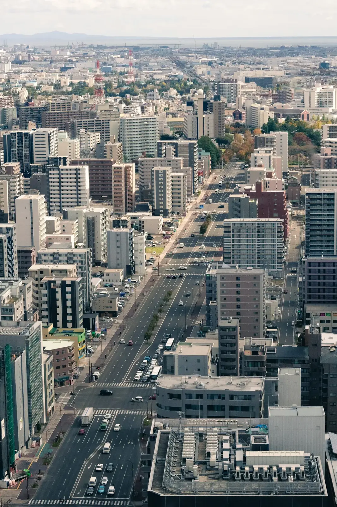
仙台市街景
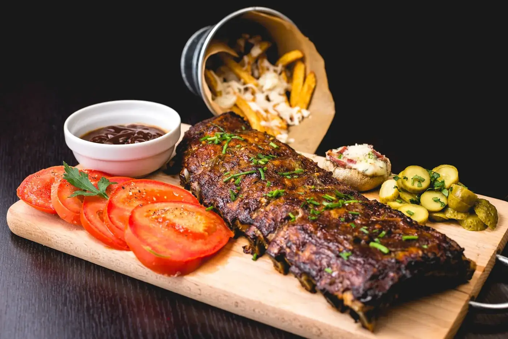
當晚：善治郎牛舌
新幹線前往仙台
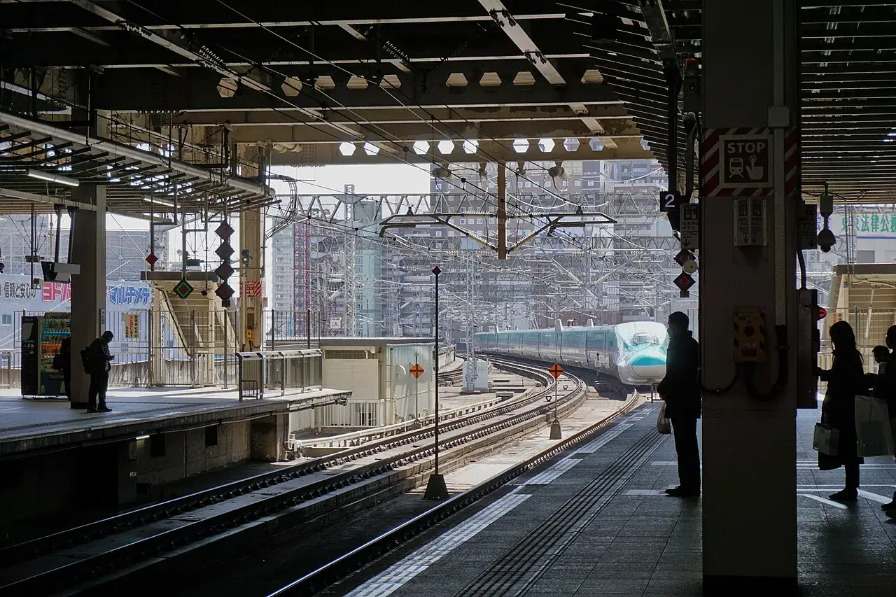
仙台駅新幹線（真景）
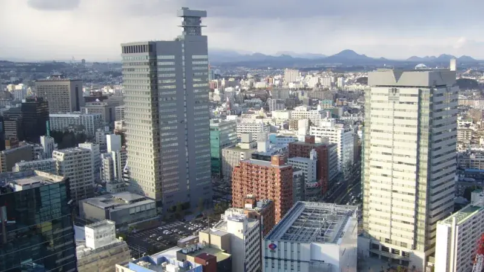
AER 展望台夜景方向
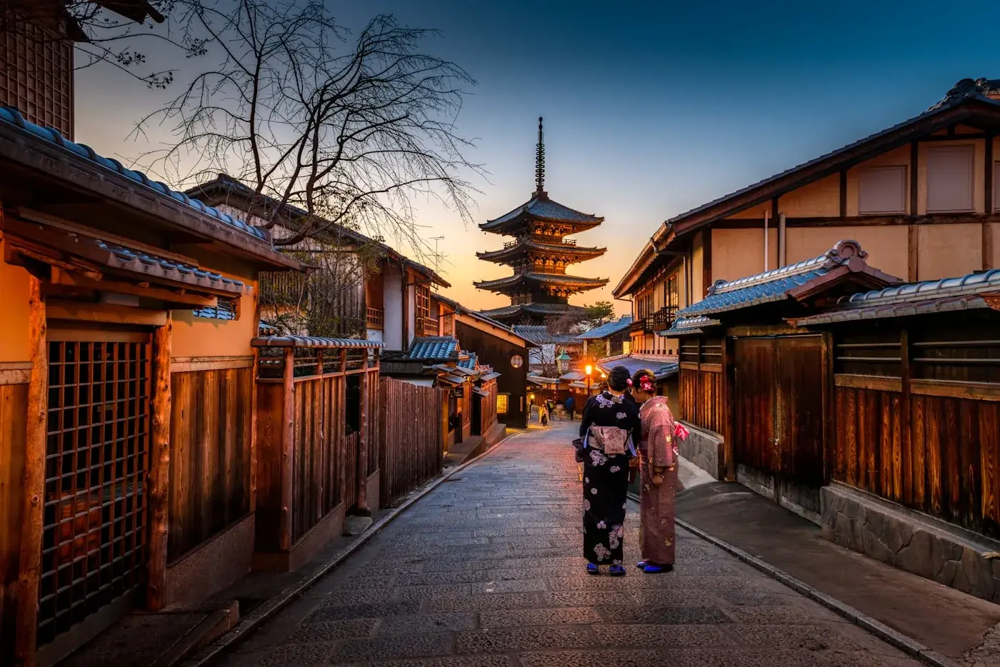
名掛丁散步
-
05:30–07:00
前往高雄機場 · 報到
國際線建議起飛前約 2.5–3 小時抵達。確認護照、華航電子機票、JR 東北周遊券兌換單與飯店確認信。
早餐：機場輕食或機上餐
-
07:55
華航起飛 · 高雄 → 成田
預計 12:35 抵達成田空港。機上可小睡，為午後 N'EX＋新幹線留體力。
-
12:35–14:00
成田空港 · 換周遊券 · 轉往東京
入境領行李後，至 JR 東日本旅行服務中心／綠色窗口兌換 JR 東日本鐵路周遊券（東北地區）5 日，建議當日啟用（用至 8/17）。
- 劃位：成田特快 N'EX → 東京站（約 60 分；周遊券適用）
- 同日劃位：東京 → 仙台東北新幹線（はやぶさ／やまびこ）
- 啟用 eSIM／Wi-Fi；大行李放新幹線大型置物區
成田換票＋劃位尖峰可能排隊，預留緩衝；N'EX 盡量劃指定席。
-
14:00–16:30
東北新幹線 東京 → 仙台
約 1.5–2 小時。車內可補水、吃便當；到站後出西口方向較近飯店。
午餐：車站／車內便當
-
16:30–17:30
辦理入住 · KOKO HOTEL 仙台駅前 West
地址：宮城県仙台市青葉区中央 3-8-27，〒980-0021。已預訂 2026/8/13–8/16（3 晚）。車站西口徒步可達。
- 仙台站西口出站
- 步行約 3–7 分鐘至飯店（中央 3 丁目一帶）
- 寄放／安置大件行李後再出門
-
17:30–18:30
名掛丁商店街散步
補水、買毛豆泥甜點或伴手禮當點心。天氣熱時可在拱廊內慢慢走。
-
18:30–19:30
AER 展望台
AER 大樓展望台可看仙台夜景與街景。時間緊則可縮短，優先晚餐排隊。
-
19:30–21:00
善治郎牛舌晚餐
推薦「上撰極厚真中牛舌定食」。仙台站 3F 牛舌通或站前本店皆可，尖峰請提早或候位。
晚餐：善治郎牛舌定食
長途日：晚餐後早點休息，為隔天松島留體力。
松島 · 仙台名所
日本三景 · 續住 KOKO HOTEL 仙台駅前 West（第 2／3 晚）
日歸松島
JR 仙石線約 40 分
瑞鳳殿 · 仙台城跡
續住 KOKO
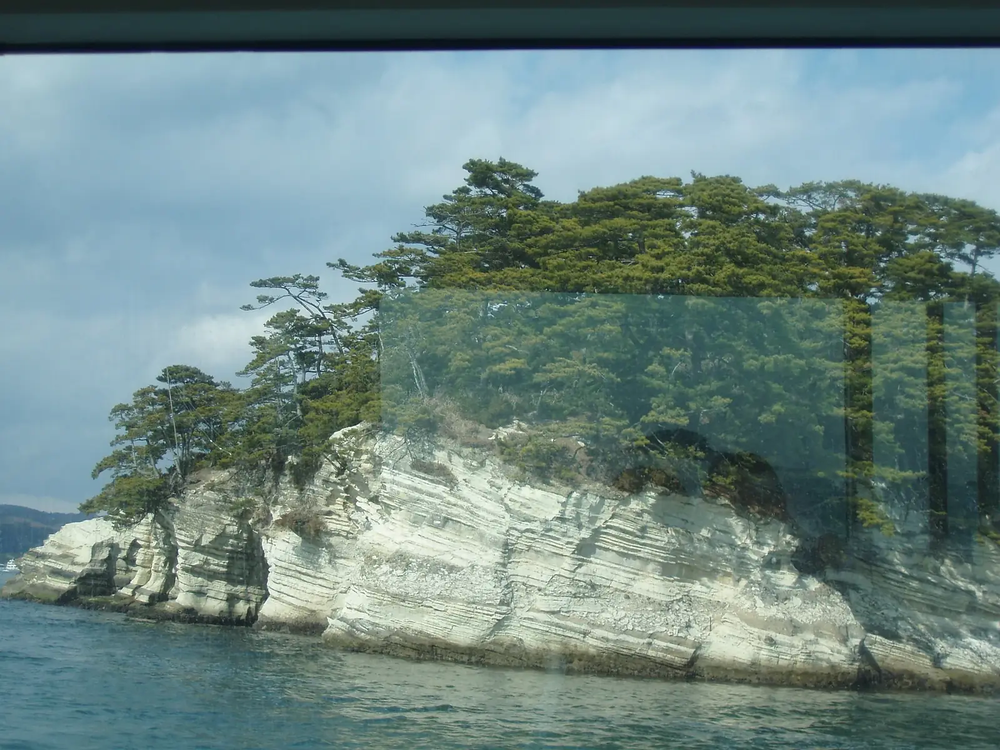
松島灣 — 日本三景之一（Wikimedia Commons）
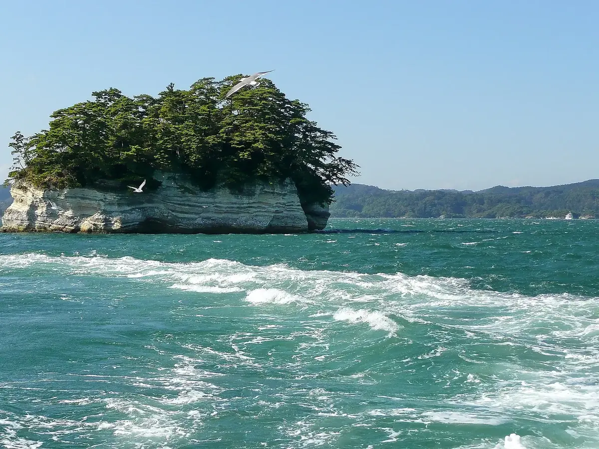
松島灣全景
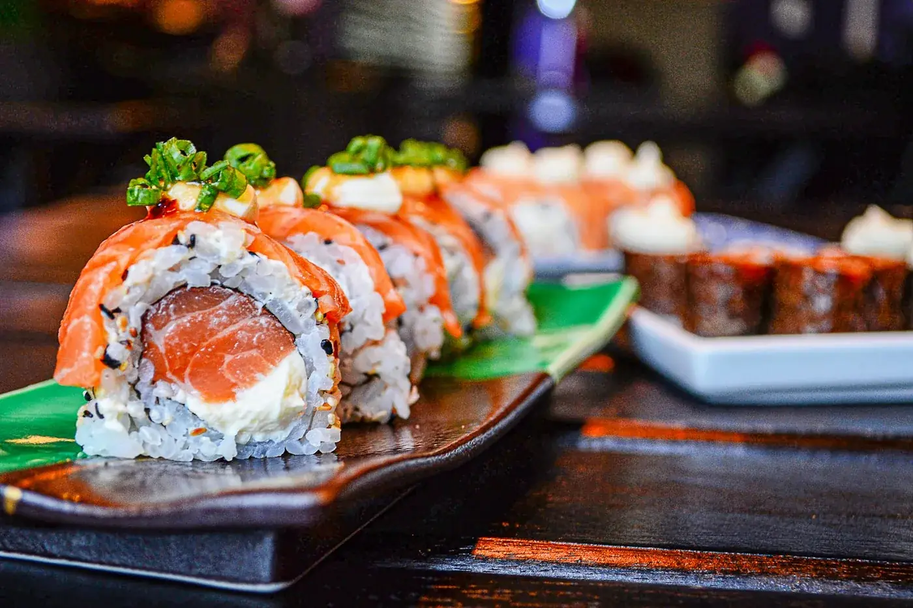
仙台朝市海鮮丼
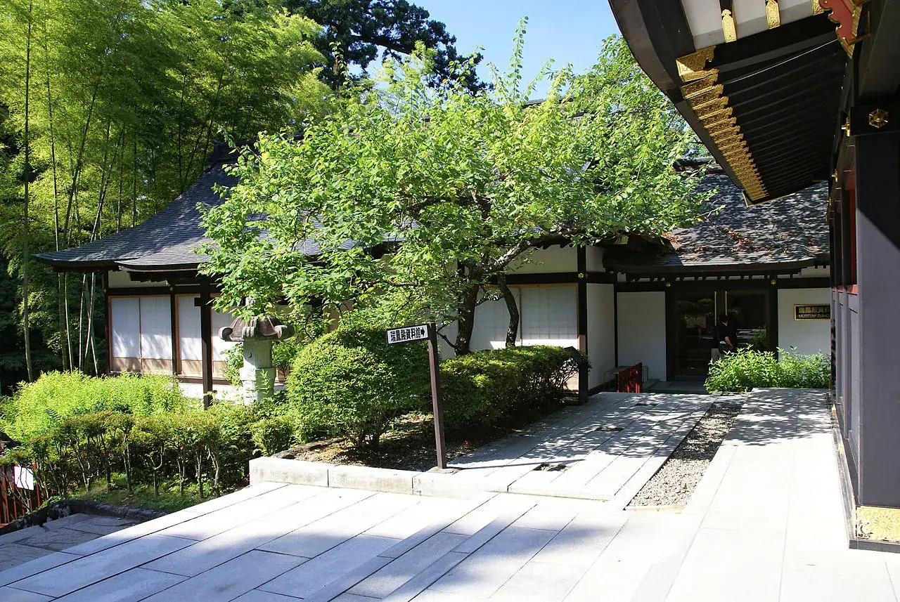
瑞鳳殿（真景）
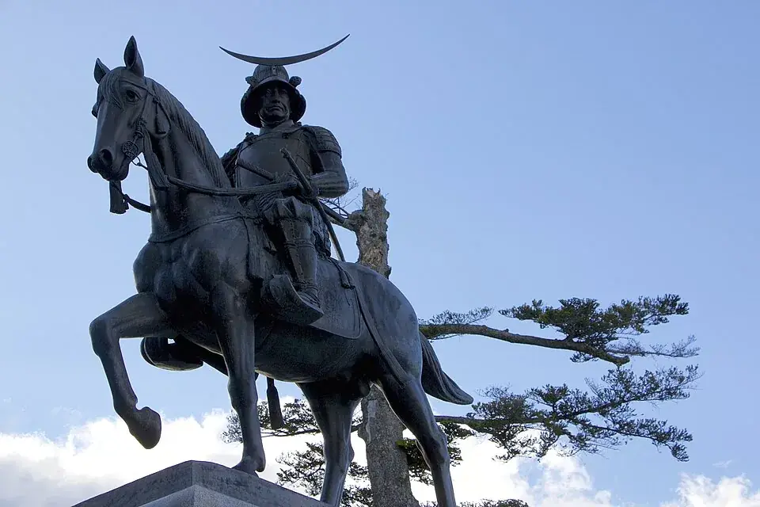
仙台城跡 · 政宗像
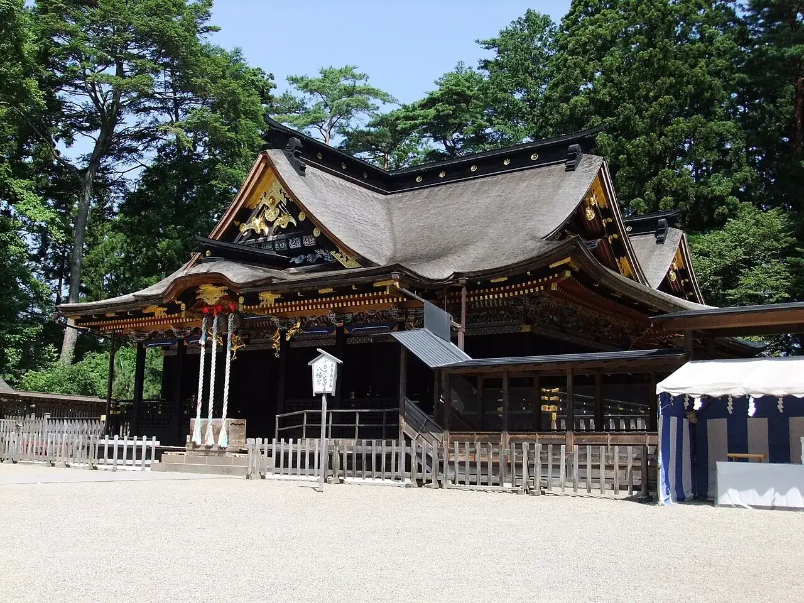
大崎八幡宮（真景）
瑞鳳殿近景
松島五大堂周邊
-
07:30–08:30
仙台朝市早餐
距仙台站約步行 5 分鐘。海鮮丼或齋藤惣菜店現炸可樂餅都很適合出發前補給。
早餐：朝市海鮮丼／可樂餅
約 08:00–17:00，週日休——出發前再確認當日營業。
-
08:40–09:30
JR 仙石線 → 松島海岸
約 40 分鐘。建議上午抵達，避開正午強日。
- 仙台站 → 搭 JR 仙石線（快速／普通皆可）
- 松島海岸站下車
- 出站後步行至五大堂／福浦橋方向
-
09:30–11:30
松島散步 · 五大堂 · 福浦橋
走福浦橋看灣內島群，五大堂紅橋好拍。八月正午熱，建議上午逛完再找陰涼處休息。
-
11:00–12:00
（選）松島灣觀光船
約 50 分鐘航程，票價約 1,500 日圓；大致每小時一班，約 09:00–16:00（依當日公告）。家人同行可選坐船看島，體力較省。
出航時間與票價請以現地／官網為準；風浪大時可能停航。
-
12:00–13:00
松島午餐 · 返回仙台
車站周邊或灣邊簡易午餐後，原路搭仙石線回仙台。
午餐：松島海鮮／牡蠣料理（依胃口）
- 松島海岸 → JR 仙石線 → 仙台
- 回站後轉市內巴士或計程車往瑞鳳殿
-
13:30–15:00
① 瑞鳳殿
伊達政宗之靈屋，極彩色華麗。可由松島返回仙台後，搭市內巴士或觀光路線前往。
-
15:00–16:30
② 仙台城跡（青葉山）
可看政宗騎馬像與市區展望。與瑞鳳殿同區，步行或短程移動即可串連。
-
16:30–18:00
③（選）大崎八幡宮
國寶社殿，金箔與漆工華麗，傍晚光線好看。體力不足可省略，優先瑞鳳殿＋城跡。
若體力不足，大崎八幡宮可改隔天或省略。
-
18:30–20:30
返回 KOKO · 仙台站前晚餐
續住 KOKO HOTEL 仙台駅前 West。晚餐可在名掛丁／站前選烤魚定食或輕食，不必再排牛舌。
晚餐：站前定食／輕食
鳴子溫泉日歸
奧州名湯 · 續住 KOKO HOTEL 仙台駅前 West（第 3／3 晚）
日歸溫泉
新幹線＋陸羽東線
足湯 · 栗子糰子
KOKO 最後一晚
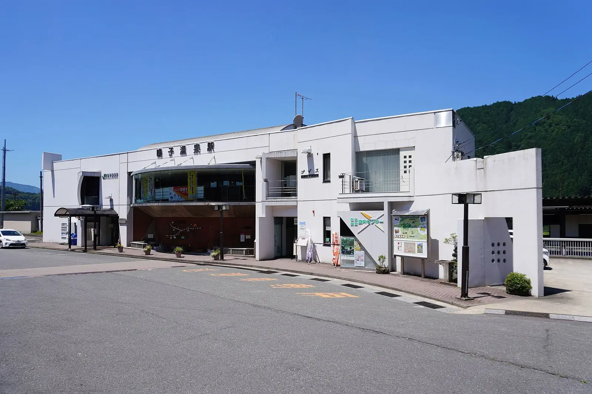
JR 鳴子溫泉站（Wikimedia Commons）
 日歸溫泉氛圍
日歸溫泉氛圍
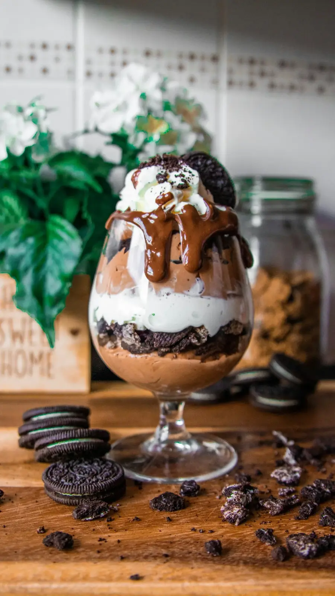
泡湯後：栗子糰子
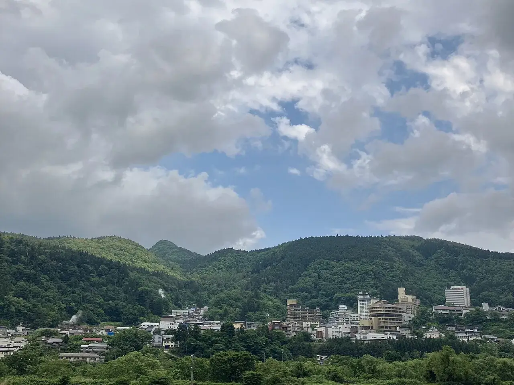
鳴子溫泉街遠景（真景）
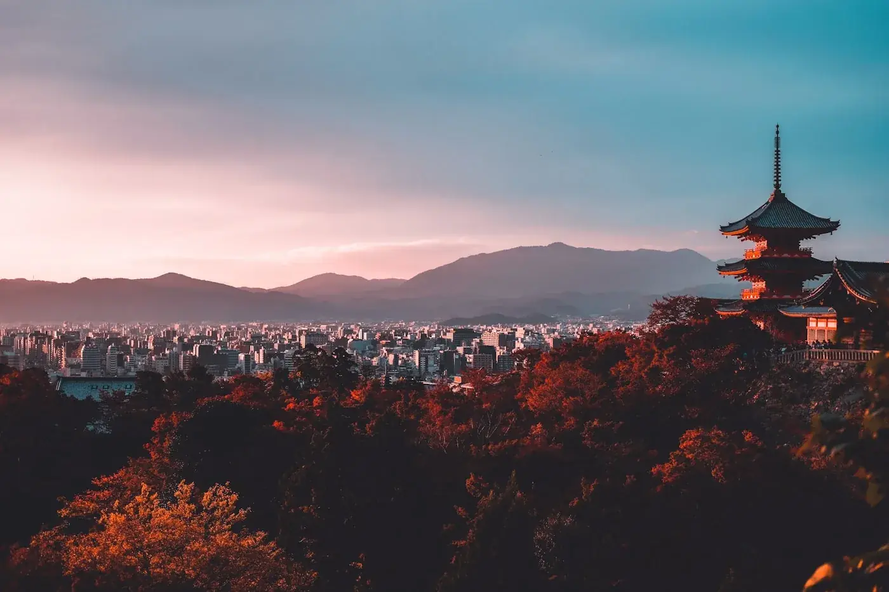
足湯／泡湯放鬆
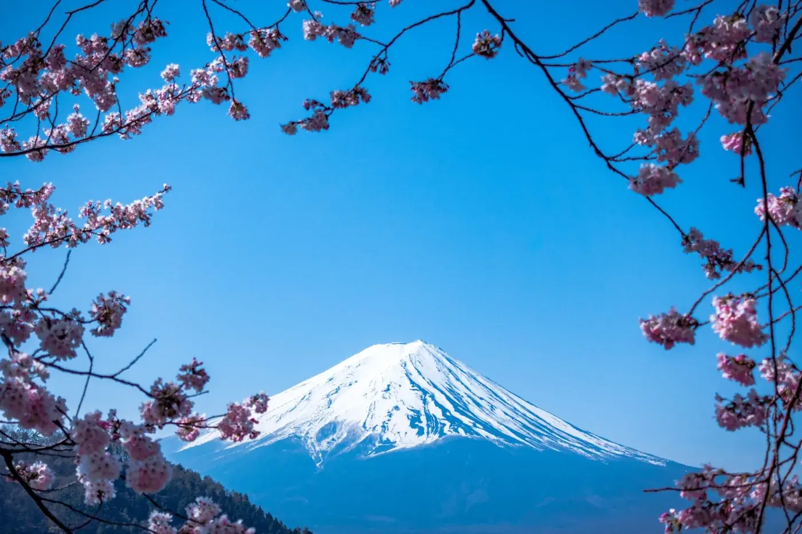
東北山間風光
陸羽東線往返
-
07:30–08:00
飯店出發 · 仙台站朝食
簡單早餐後出發。出發前先查好陸羽東線往返時刻——班次較疏。
早餐：飯店／站前輕食
-
08:00–09:30
仙台 → 古川 → 鳴子溫泉
單程約 1–1.5 小時。JR 東北周遊券可搭新幹線與陸羽東線。
- 仙台 → 東北新幹線 → 古川（約 15 分）
- 古川 → JR 陸羽東線 → 鳴子溫泉（約 45 分）
- 鳴子溫泉站出站即近足湯與湯屋區
陸羽東線班次稀疏，請先鎖定去程與回程班次再出發。
-
09:30–10:00
站前免費足湯
先泡足暖身、拍車站建築，再決定日歸湯屋。
-
10:00–12:30
日歸溫泉
選一家開放日歸的湯屋放鬆。攜帶小毛巾／換洗衣物較方便；貴重物品寄放櫃。
-
12:30–13:30
午餐 · 深瀬栗子糰子
泡湯後來一份深瀬（Fukase）栗子糰子當甜點或輕食。也可搭配溫泉街簡單定食。
午餐／甜點：深瀬栗子糰子
-
13:30–15:00
（選）木芥子彩繪體驗
鳴子是木芥子（こけし）故鄉。若時間與體力允許，可體驗彩繪；否則逛工房選購即可。
-
15:00–16:30
返回仙台
原路折返。務必對準預查的回程班次，避免末班錯過。
- 鳴子溫泉 → 陸羽東線 → 古川
- 古川 → 東北新幹線 → 仙台
- 步行回 KOKO HOTEL 仙台駅前 West
回程請先查時刻表，班次疏時寧早勿晚。
-
18:00–20:00
KOKO 最後一晚 · 仙台市區晚餐
續住最後一晚。可吃牛舌以外的選擇：烤魚定食、毛豆泥拉麵等。明天退房往猊鼻溪／盛岡。
晚餐：烤魚定食／毛豆泥拉麵
猊鼻溪 · 盛岡
退房 KOKO HOTEL · 峽谷遊船 · 住宿盛岡
退房移動日
仙台→一ノ関
猊鼻溪遊船約 90 分
住宿盛岡（待訂）
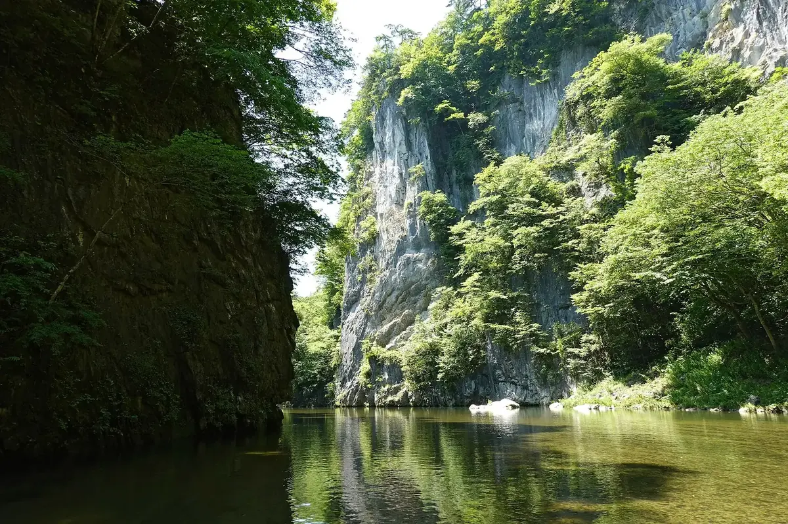
猊鼻溪 — 岩手縣一関（Wikimedia Commons）
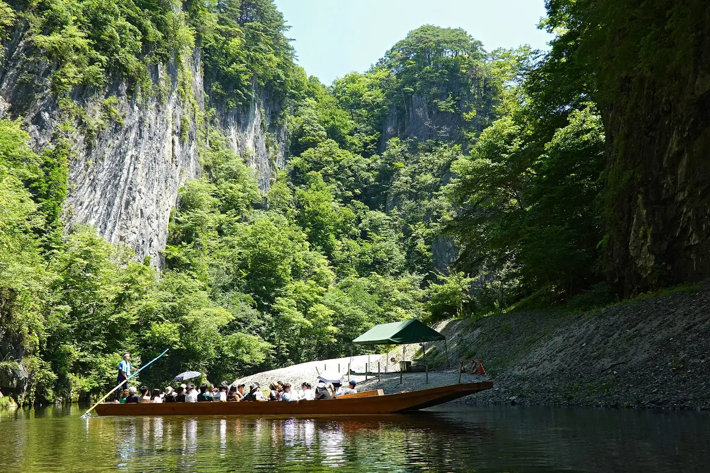
猊鼻溪遊船路線風景
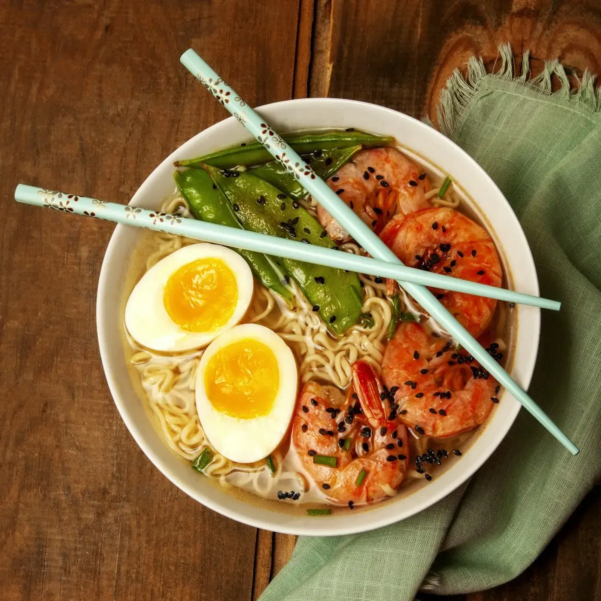
盛岡晚餐：三大麵擇一
午後自由活動
石灰岩峽谷近景
溪谷周邊綠意
一ノ関 → 盛岡
盛岡市區休息
-
07:30–08:30
KOKO 退房 · 行李安排
辦理退房（8/16）。大行李可先寄放一ノ関站、送往盛岡飯店，或僅帶當日小包前往猊鼻溪。
早餐：飯店／站前
-
08:30–09:30
仙台 → 一ノ関
東北新幹線北上，約 30–40 分鐘至一ノ関。
- 仙台 → 東北新幹線 → 一ノ関
- 站前轉巴士或計程車前往猊鼻溪
-
09:30–10:30
巴士／計程車 → 猊鼻溪
依班次與人數選擇巴士或計程車。旺季建議早到，預留售票與候船時間。
-
10:30–12:30
猊鼻溪遊船
船程約 90 分鐘，票價約 1,900 日圓。船夫會唱「猊鼻追分」。小費／投幣習慣請備現金；實際票價與班次以現地為準。
建議備零錢；大行李勿帶上船，先寄放車站或飯店。
-
12:30–13:30
溪谷周邊午餐 · 休息
船屋周邊簡易用餐、買伴手禮，稍作休息再返回一ノ関。
午餐：猊鼻溪周邊定食／輕食
-
13:30–15:00
自由活動 · 返回一ノ関
當日移動適中，下午留白剛好。可在溪谷或車站周邊休息後再北上。
- 猊鼻溪 → 巴士／計程車 → 一ノ関
- 取回寄放行李（若有）
-
15:00–16:30
一ノ関 → 盛岡
新幹線或在來線北上至盛岡，辦理入住（住宿待訂，出發前確認）。
- 一ノ関 → 東北新幹線／在來線 → 盛岡
- 前往預訂飯店 check-in
-
18:00–20:00
盛岡三大麵晚餐
盛岡冷麵、炸醬麵（じゃじゃ麺）、蕎麥麵——選一家即可。早點休息，隔天長途往輕井澤／東京。
晚餐：盛岡冷麵／じゃじゃ麺／蕎麥麵（擇一）
輕井澤 · 東京
高原散步 · 入住 APA Hotel Asakusa Kuramae（第 1／2 晚）
長途移動日
盛岡→大宮→輕井澤
景點擇一
APA 淺草藏前
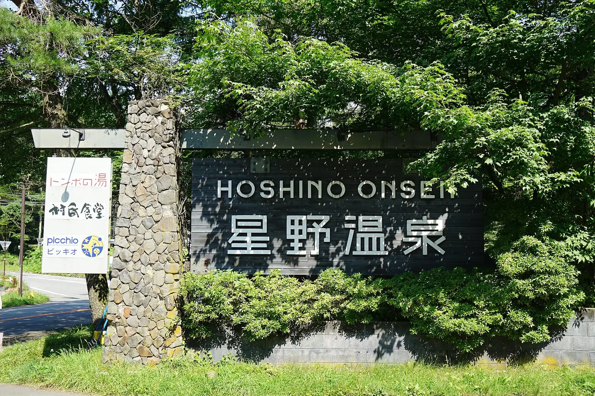
輕井澤 · 星野溫泉一帶（Wikimedia Commons）
高原散步
舊輕井澤銀座（擇一）
盛岡 → 輕井澤 → 東京
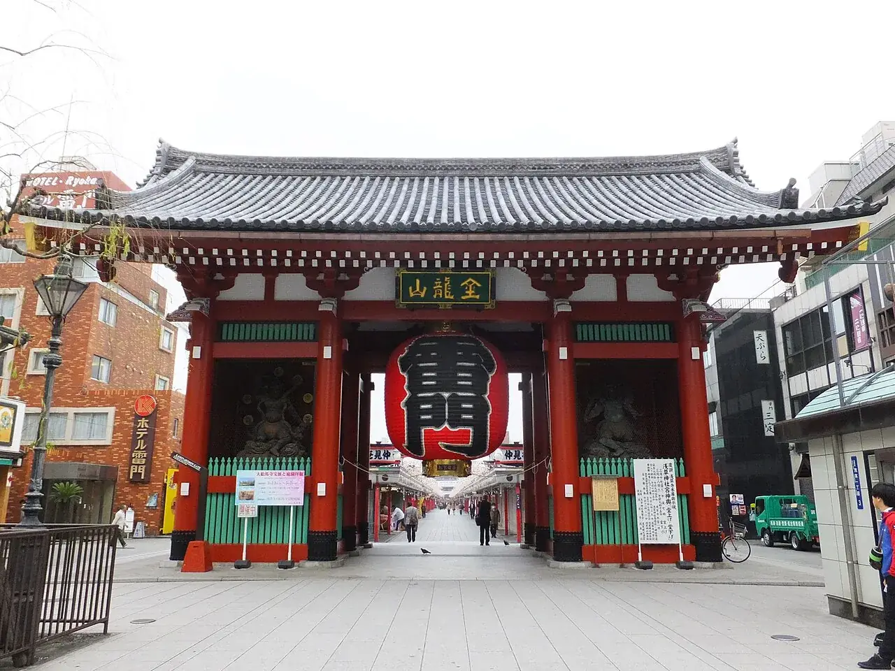
淺草雷門（飯店附近）
-
07:00–08:00
盛岡退房 · 前往車站
本日移動較長。行李可先寄 APA Hotel Asakusa Kuramae（若飯店接受提前寄送）或只帶當日包。
早餐：飯店／站前
建議事先劃位；把「到達」當目標，景點別排太滿。
-
08:00–11:30
盛岡 → 大宮（東北新幹線）
南下至大宮換車。車程視班次約 2–2.5 小時，預留轉乘時間。
- 盛岡 → 東北新幹線 → 大宮
- 大宮站內轉北陸新幹線（あさま／はくたか等）
-
11:30–12:30
大宮 → 輕井澤（北陸新幹線）
約 1 小時左右至輕井澤。出站後依所選景點搭巴士或步行／計程車。
- 大宮 → 北陸新幹線 → 輕井澤
- 出站後前往今日擇一景點
-
12:30–13:30
輕井澤午餐
高原比東京涼爽，適合慢慢用餐再散步。
午餐：輕井澤街邊／Outlet 美食
-
13:30–16:00
輕井澤自由活動（擇一）
時間有限，請三選一即可，勿硬塞全部：
- 舊輕井澤銀座散步購物
- 輕井澤 Outlet
- 雲場池散步
-
16:00–17:30
輕井澤 → 東京
北陸新幹線返回東京方向（東京／上野等），再轉往藏前／淺草橋一帶。
- 輕井澤 → 北陸新幹線 → 東京／上野
- 轉地鐵／都營淺草線等至藏前／淺草橋
-
18:00–19:00
入住 APA Hotel Asakusa Kuramae
已預訂 2026/8/17–8/19（2 晚）。飯店近淺草寺、晴空塔，取行李後再出門用餐。
-
19:00–20:30
淺草／藏前晚餐
長途日晚餐從簡即可：蕎麥、定食或便利商店補給皆可。
晚餐：淺草／藏前定食
高尾山 · 明治神宮
東京近郊 · 續住 APA Hotel Asakusa Kuramae（第 2／2 晚）
東京近郊
高尾山纜車／吊椅
明治神宮
續住 APA
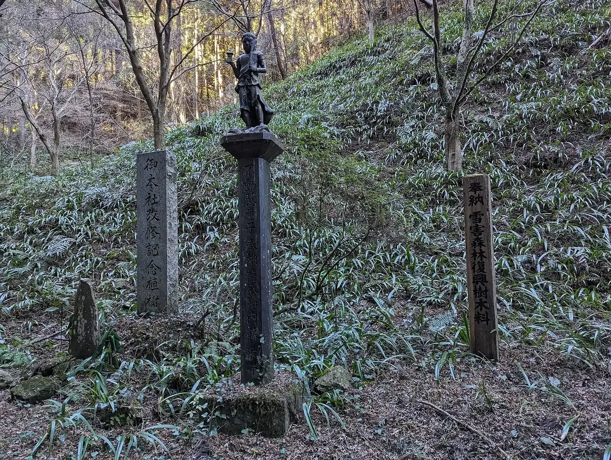
高尾山步道（Wikimedia Commons）
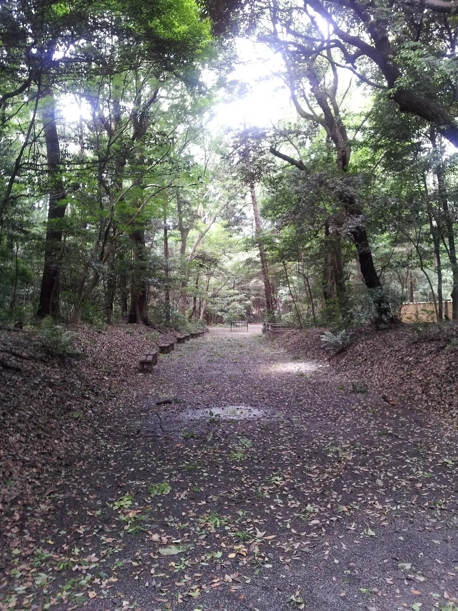
明治神宮參道
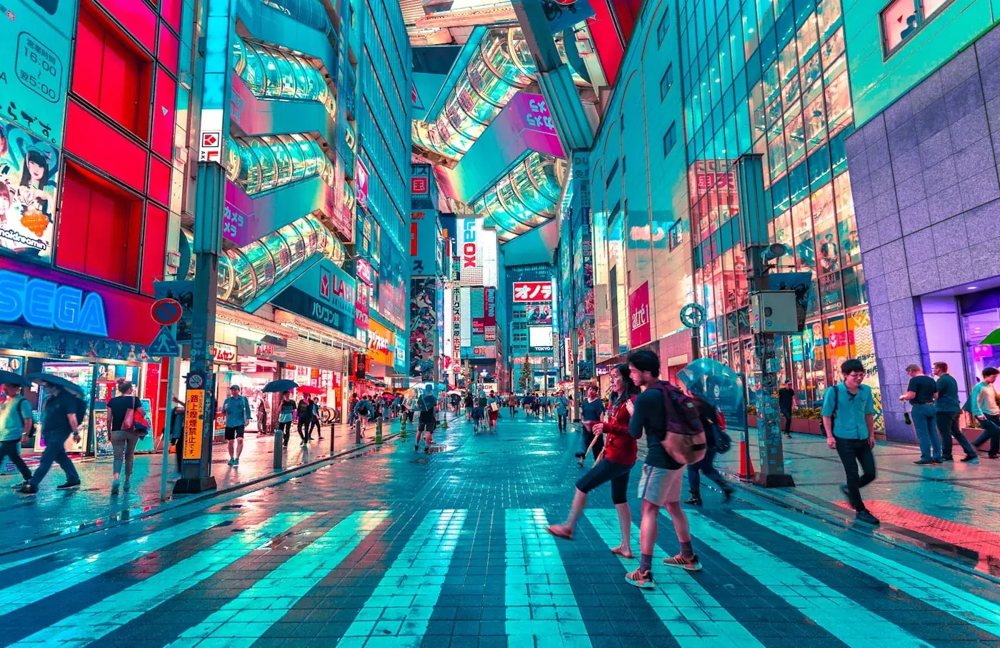
晚上：淺草／藏前用餐
高尾山林浴
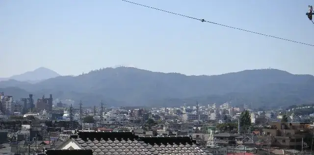
高尾山展望
明治神宮參道
飯店近淺草雷門
-
07:00–07:30
早起出發（避開人潮）
高尾山週末與連假易擠，平日也建議早到。輕裝、帶水與防曬。
早餐：便利商店／飯店
-
07:30–09:00
前往高尾山口
自藏前／淺草一帶轉往京王線。京王線不在 JR 東北周遊券範圍，請用 Suica／單獨購票。
- 都營淺草線／地鐵 → 新宿（或適當轉乘站）
- 京王線 → 高尾山口（另購票）
- 步行至纜車／吊椅乘車處
-
09:00–12:00
高尾山 · 纜車或吊椅 · 平緩步道
家人建議搭纜車或吊椅上山，再走平緩路線；不必硬攻最陡步道。山頂天氣好時可眺望關東平野。
穿防滑鞋；雨後步道濕滑，量力而行。
-
12:00–13:00
山上或山腳午餐
天狗燒、定食或便當皆可。用餐後下山返回市區。
午餐：高尾山天狗燒／定食
-
13:00–14:30
下山 · 前往原宿／明治神宮
返回京王線後轉往原宿方向。
- 高尾山口 → 京王線 → 新宿／適當站
- 轉山手線等 → 原宿
- 步行進入明治神宮參道
-
14:30–16:00
明治神宮參拜
原宿站步行即達。參道杉木成蔭，較市區涼爽。可順路看表參道，但八月午後熱，參拜完即可離開。
-
16:00–17:30
返回 APA Hotel Asakusa Kuramae
高尾與明治神宮離飯店較遠，建議直接回藏前休息，不宜再加景點。
- 原宿 → 山手線／地鐵 → 上野／淺草橋／藏前
- 步行回 APA
-
18:00–20:00
淺草／藏前晚餐
在 APA 附近用餐即可。明天退房並買伴手禮，不宜太晚。
晚餐：淺草／藏前
上野 · 阿美橫丁 · 返程
退房 APA · 成田 18:35 起飛 · 華航返高雄
返國日
淺草寺（選）
阿美橫丁
CI 18:35→21:40
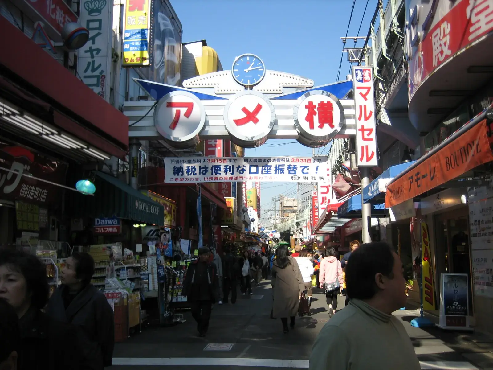
阿美橫丁掃貨氛圍
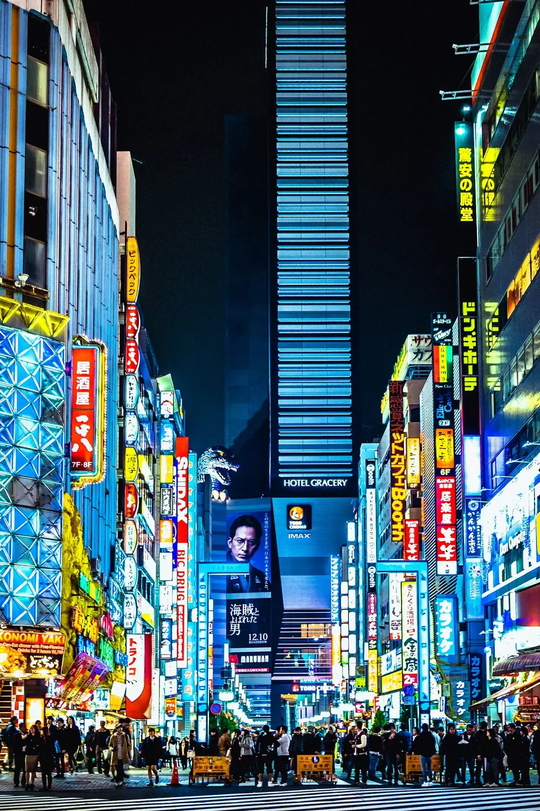
上野／東京街頭
18:35 起飛 → 21:40 高雄
淺草寺雷門（真景）
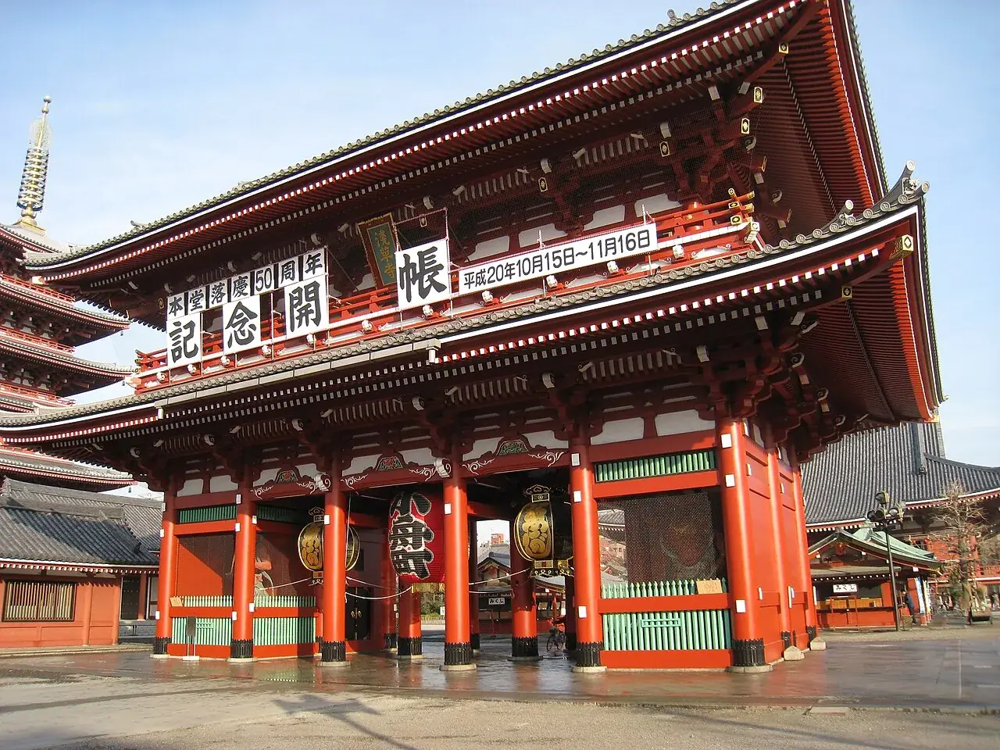
淺草寺寶蔵門（真景）
阿美橫丁
上野周邊
-
08:00–09:00
APA 退房 · 行李寄放或送機
辦理退房。行李可寄放飯店，或直送成田空港（若有服務）。今日周遊券多半已用完（若 8/13–8/17 啟用），地鐵與機場交通另購／刷 Suica。
早餐：飯店／便利商店
-
09:00–10:30
（選）淺草寺
飯店近淺草，時間夠可順路參拜、買少量伴手禮。人潮多時改走側街，勿拖延至中午以後。
-
10:30–13:00
上野 · 阿美橫丁購物
藏前／淺草到上野很近。阿美橫丁買藥妝、零食、泡麵；控制體積與液體安檢規定。
- 藏前／淺草 → 徒步或地鐵短程 → 上野
- 阿美橫丁掃貨（預留結帳與打包時間）
午餐：阿美橫丁邊走邊吃／丼飯
-
13:00–14:00
取行李 · 最後補給
返回飯店取行李（若寄放），確認護照、機票與插座轉接頭皆已打包。
-
14:30–15:00
出發前往成田空港
建議約 14:00–14:30 動身（成田比羽田遠），為 18:35 班機預留電車＋報到＋安檢。國際線建議起飛前約 3 小時抵機場。
- 推薦：京成 Skyliner（上野／日暮里 → 成田，較快）
- 或：JR 成田特快 N'EX（需另購票；周遊券已過期則不可免票）
- 利木津巴士：行李多時可考慮，車程較長請更早出發
自淺草／上野往成田，尖峰再加 20–30 分緩衝；液體與電池符合航空規定。
-
15:00–17:30
抵達機場 · 報到安檢
完成報到、託運、安檢與出境審查。剩餘時間可在免稅區休息。
-
18:35
華航起飛 · 成田 → 高雄
預計 21:40 抵達高雄。旅途結束，回家休息。
晚餐：機上餐
照片來源：本機 images（瑞鳳殿、大崎八幡宮、政宗像、淺草雷門／寶蔵門、鳴子溫泉、仙台新幹線、AER、松島、猊鼻溪、明治神宮、高尾山等真景已離線存檔）。地圖仍開 Google Maps。